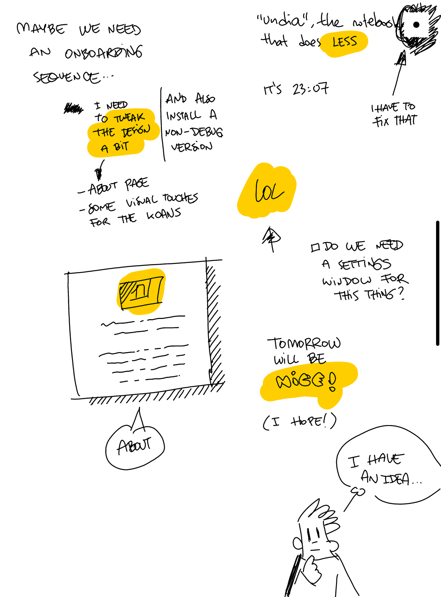

The notebook
that does less.
undia is a half notebook, half philosophy experiment: one pen, one page, and one day to fill it. At midnight, yesterday becomes read-only and you get a fresh blank page.
I made it for my Boox e-ink tablet, but it seems to run reasonably well on any Android 8+ device.
Works great with a stylus, but your fingers are fine too.
